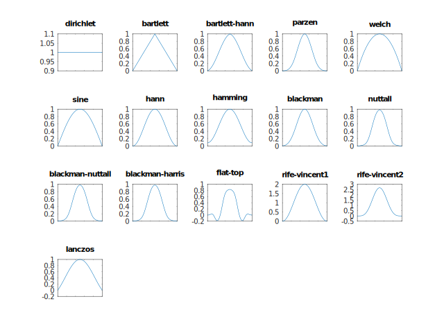

- bartlett
alias bartlett = triangular!0
- blackman
alias blackman = cosine!(7_938.0 / 18_608.0, 9_240.0 / 18_608.0, 1_430.0 / 18_608.0)
- blackman_harris
alias blackman_harris = cosine!(0.358_75, 0.488_29, 0.141_28, 0.011_68)
Blackman-Harris window function
- blackman_nuttall
alias blackman_nuttall = cosine!(0.363_581_9, 0.489_177_5, 0.136_599_5, 0.010_641_1)
Blackman-Nuttall window function
- boxcar
alias boxcar = rectangular
- dirichlet
alias dirichlet = rectangular
Dirichlet window function
- fejer
alias fejer = triangular!0
- flat_top
alias flat_top = cosine!(0.215_578_95, 0.416_631_58, 0.277_263_158, 0.083_578_947, 0.006_947_368)
- flat_top2
alias flat_top2 = cosine!(1.0, 1.93, 1.29, 0.388, 0.028)
- hamming
alias hamming = cosine!(25.0 / 46.0, 1.0 - 25.0 / 46.0)
- nuttall
alias nuttall = cosine!(0.355_768, 0.487_396, 0.144_232, 0.012_604)
- rectangular
alias rectangular = genWindow!((uint n) => 1.0)
Rectangular window function
- rife_vincent1
alias rife_vincent1 = cosine!(1.0, 1.0)
Rife-Vincent window function of Class I with K = 1 Note: Functionally equivalent to the Hann window function.
- rife_vincent2
alias rife_vincent2 = cosine!(1.0, 4.0 / 3.0, 1.0 / 3.0)
Rife-Vincent window function of Class I with K = 2
- bartlett_hann
template bartlett_hann(uint N, W)
Bartlett-Hann window function
- cosine
template cosine(real a0 = 0, real a1 = 0, real a2 = 0, real a3 = 0, real a4 = 0)
- genWindow
template genWindow(alias F)
Create window by generating weights
- genWindow
template genWindow(alias F, uint N, W)
Create window by generating weights
- hann
template hann(uint N, W)
- isWindow
template isWindow(alias W)
Check for window function
- lanczos
template lanczos(uint N, W)
- parzen
template parzen(uint N, W)
- sine
template sine(uint N, W)
- triangular
template triangular(uint K)
Triangular window function (2nd-order B-spline window)
- welch
template welch(uint N, W)
Window functions
This module defines window function weights type and initializers for some well known widely used window functions.
